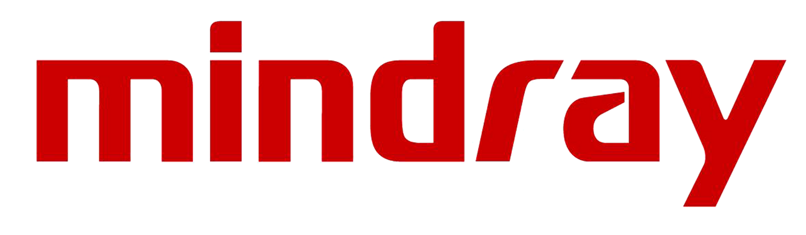

Lo que hacemos
Ingeniería Clínica
Especializada.
Mantenimiento, reparación y soporte técnico integral para el equipamiento médico de su institución.
Mantenimiento, reparación y soporte técnico integral para el equipamiento médico de su institución.
Desde el mantenimiento programado hasta la atención de urgencias: cubrimos todo el ciclo de vida de su equipamiento médico.
A través de nuestra relación con Sonocare —distribuidor oficial de Mindray en Argentina— ofrecemos el nivel más alto de soporte para equipos Mindray en la región NEA.


¿Quiere saber qué equipos atendemos?
Ver cobertura de equipamientoCada institución tiene necesidades distintas. Diseñamos planes adaptados al tamaño de su parque tecnológico, presupuesto y nivel de riesgo operativo.
Hechos concretos y metodologías de trabajo orientadas a proteger la inversión y la operatividad de su clínica.
Empresa fundada y operada localmente por profesionales universitarios: un Ingeniero Biomédico y un Ingeniero Mecánico. Conocemos las normativas sanitarias y los protocolos técnicos que exige el sector de la salud.
Entregamos órdenes de servicio, registros de mantenimiento y reportes técnicos detallados en cada intervención. Su institución tendrá la documentación técnica exacta y en regla para habilitaciones y prepagas.
Nuestro equipo cuenta con experiencia de campo real respaldando la tecnología médica en instituciones de alta complejidad en la ciudad de Córdoba.
Al ser ingenieros radicados en Posadas, Misiones, eliminamos por completo los altos costos de traslados y viáticos de técnicos externos. Respuesta ágil ante urgencias críticas.
No somos un taller de reparaciones. Evaluamos el estado general de su equipamiento, identificamos riesgos operativos y brindamos asesoramiento técnico experto para optimizar sus próximas decisiones de inversión.
Un ingeniero de nuestro equipo visitará su institución para auditar sus equipos críticos sin cargo y armar una propuesta a la medida de su clínica.